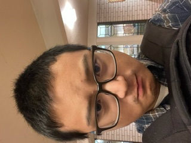
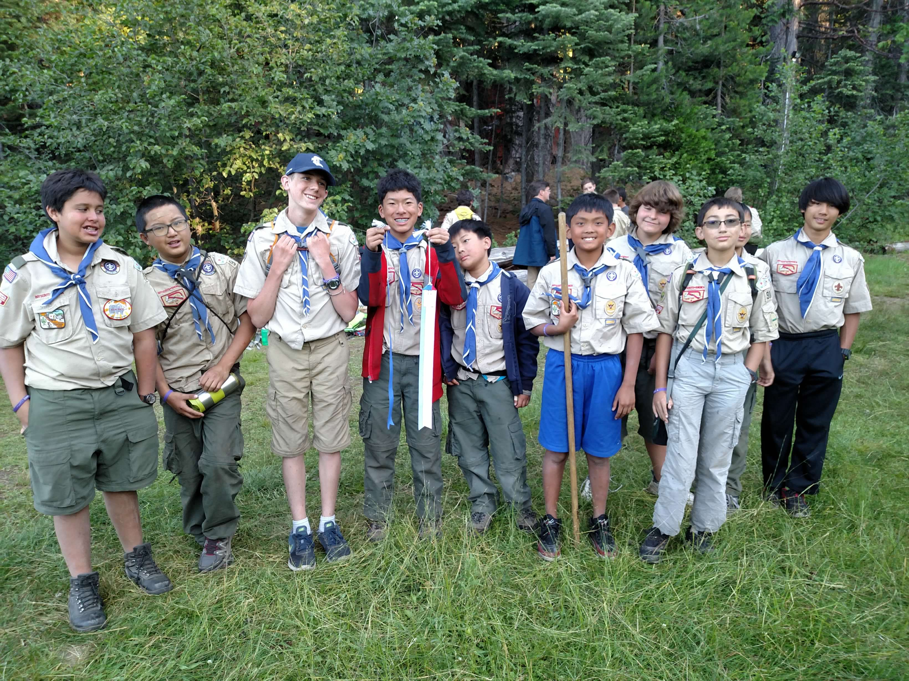
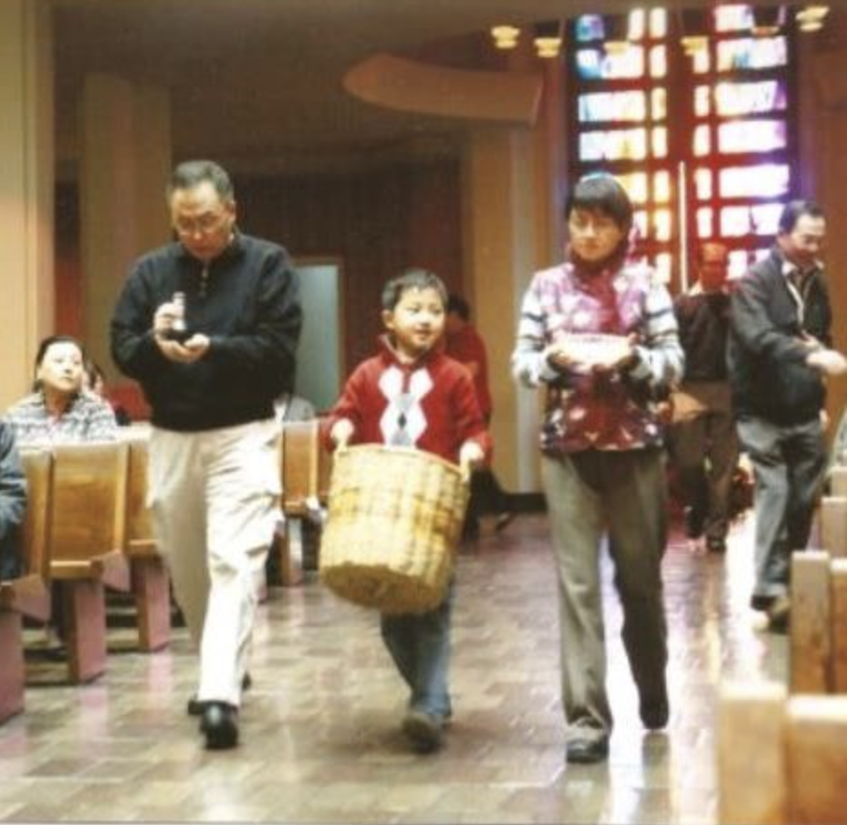

I am currently a senior at Santa Clara University and am currently majoring in computer science and engineering, with a primary focus on becoming a diagnostic data analyst. I spend the bulk of my free time reading literature on a wide variety of subjects, and I consider the highest achievement of life to reduce the imminent suffering that pervades our current human civilization. For now, however, I suppose I consider myself a mere nurse, who seeks to use the understanding of qualitative data, to identify the current problems of which humanity contends, so that others more qualified than myself may solve them. In this way, I seek to be your humble servant in exchange for pay and work experience, though I will do everything I can to one day prove myself worthy of my own introduction.
I was born in Burlingame and was quickly baptized by the Catholic Church. A few years later, my parents would move me to San Mateo, and then Dublin. I had to frequently change schools as my family moved from place to place in the same general ar, which exposed me to a wide variety of peoples and helped me develop terrific social skills. At the age of five to six, I began making my own computer games in Python. As I grew older, I also picked up on Java, PHP, MySQL, and HTML/CSS during my school days. I spent a decent portion of my life as a boy scout, though I wasn't able to reach my goals due to the frequent movement and the bankruptcy in 2019. (I am the second person from the left, covered in bandages.)


As for Santa Clara University, I have already completed most of my core requirements and should be able to graduate by June 2025. In any case, I wish to make defining contributions to the team and hope that you would see me as a competent, responsible, and creative worker.